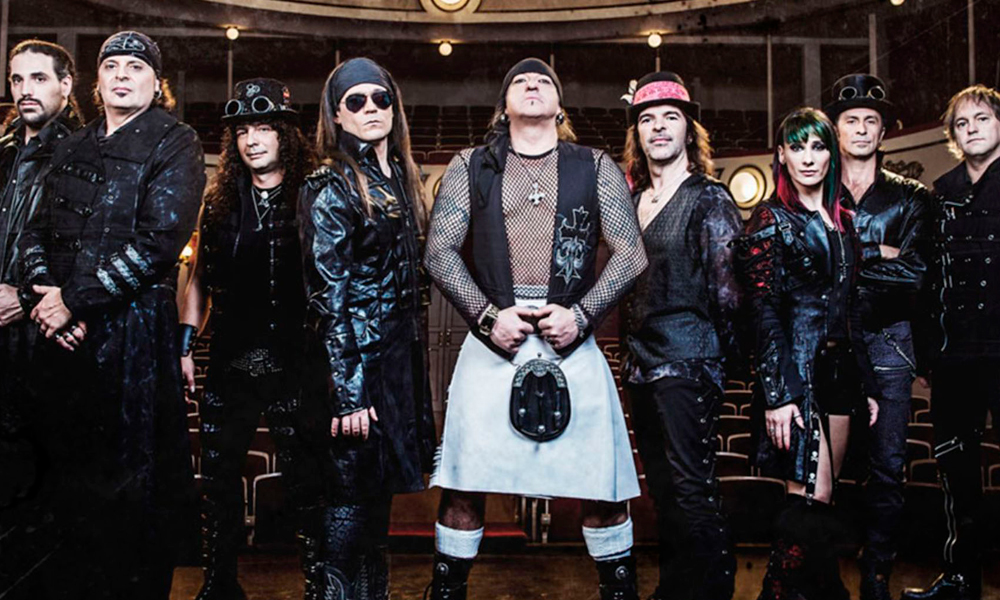

Mago de Oz
Mägo de Oz es una banda de Folk Metal fundada el 7 de julio de 1988 por el baterista Txus di Fellatio. Se caracterizan por su heterogénea y peculiar propuesta musical de mezclar géneros como el Heavy Metal, Power Metal, Folk Metal, Celtic Metal, Hard Rock entre otros. Sin embargo, la música celta ha sido la que predomina en el sonido de la banda hasta la actualidad.
Consagrados como una de las agrupaciones más reconocidas del folk metal español, saltaron al éxito en 1998 con el disco La leyenda de La Mancha, llegando a las listas de éxitos musicales de España con canciones como «Molinos de viento» o posteriormente, ya con su disco Finisterra, «Fiesta pagana».123 La fama del grupo y su éxito, tanto en la prensa especializada como en los medios convencionales a nivel nacional e internacional, especialmente en Hispanoamérica, se hizo aún mayor tras la publicación del disco Gaia en 2003, siendo el primer trabajo de una trilogía conceptual completada con los discos Gaia II: La voz dormida en 2005 y Gaia III: Atlantia en 2010, de igual o mayor éxito.
Destacaron la escenografía de sus conciertos, que incorpora desde barcos piratas hasta catedrales medievales, pirotecnia y varias puestas en escena inéditas en el panorama español, así como la amplia temática lírica de sus composiciones, que varía en trasfondo, sea romántico, histórico, fantástico o de crítica política y social, muchas veces manejando historias conceptuales.
A lo largo de su carrera, Mägo de Oz ha sufrido numerosos cambios de integrantes, siendo Txus di Fellatio el único miembro original que continúa en la banda.